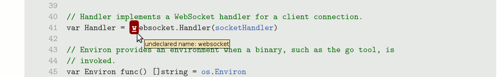
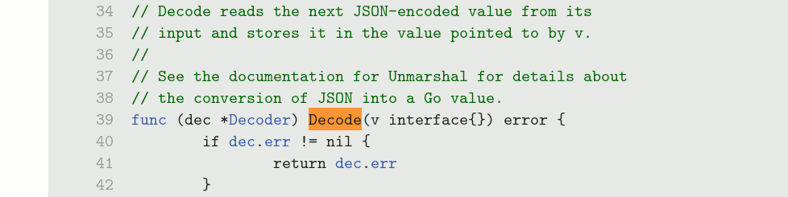
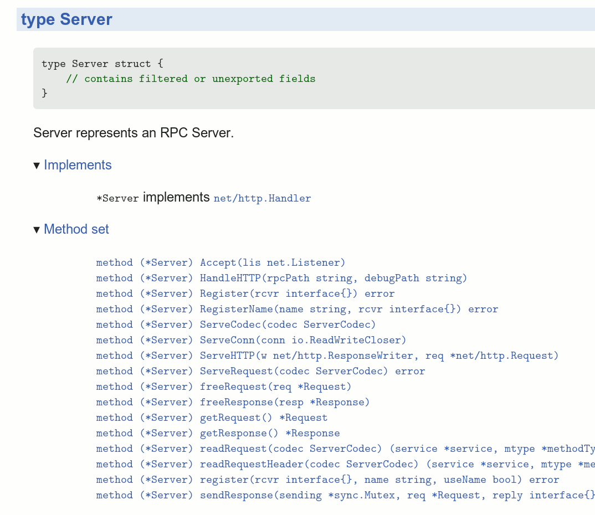
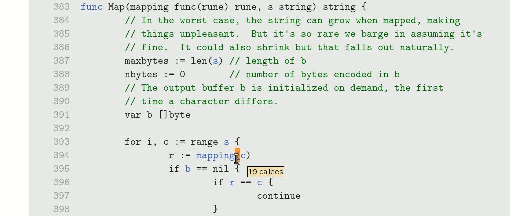
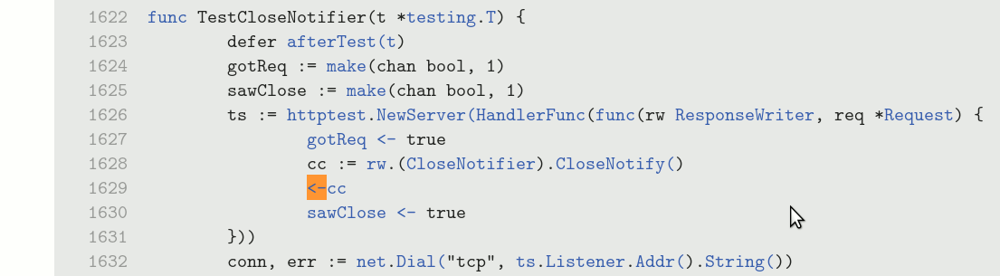

When invoked with the -analysis flag, godoc performs
static analysis on the Go packages it indexes and displays the
results in the source and package views. This document provides a
brief tour of these features.
godoc -analysis=type performs static checking similar
to that done by a compiler: it detects ill-formed programs, resolves
each identifier to the entity it denotes, computes the type of each
expression and the method set of each type, and determines which
types are assignable to each interface type.
Type analysis is relatively quick, requiring about 10 seconds for
the >200 packages of the standard library, for example.
If any source file contains a compilation error, the source view will highlight the errant location in red. Hovering over it displays the error message.

In the source view, every referring identifier is annotated with
information about the language entity it refers to: a package,
constant, variable, type, function or statement label.
Hovering over the identifier reveals the entity's kind and type
(e.g. var x int or func f
func(int) string).
Clicking the link takes you to the entity's definition.

Clicking on the identifier that defines a named type causes a panel
to appear, displaying information about the named type, including
its size and alignment in bytes, its
method set, and its
implements relation: the set of types T that are assignable to
or from this type U where at least one of T or U is an interface.
This example shows information about net/rpc.methodType.
The method set includes not only the declared methods of the type,
but also any methods "promoted" from anonymous fields of structs,
such as sync.Mutex in this example.
In addition, the receiver type is displayed as *T or
T depending on whether it requires the address or just
a copy of the receiver value.
The method set and implements relation are also available via the package view.

godoc -analysis=pointer additionally performs a precise
whole-program pointer analysis. In other words, it
approximates the set of memory locations to which each
reference—not just vars of kind *T, but also
[]T, func, map,
chan, and interface—may refer. This
information reveals the possible destinations of each dynamic call
(via a func variable or interface method), and the
relationship between send and receive operations on the same
channel.
Compared to type analysis, pointer analysis requires more time and memory, and is impractical for code bases exceeding a million lines.
When pointer analysis is complete, the source view annotates the
code with callers and callees information: callers
information is associated with the func keyword that
declares a function, and callees information is associated with the
open paren '(' of
a function call.
In this example, hovering over the declaration of the
rot13 function (defined in strings/strings_test.go)
reveals that it is called in exactly one place.
Clicking the link navigates to the sole caller. (If there were multiple callers, a list of choices would be displayed first.)

Notice that hovering over this call reveals that there are 19
possible callees at this site, of which our rot13
function was just one: this is a dynamic call through a variable of
type func(rune) rune.
Clicking on the call brings up the list of all 19 potential callees,
shown truncated. Many of them are anonymous functions.
Pointer analysis gives a very precise approximation of the call
graph compared to type-based techniques.
As a case in point, the next example shows the dynamic call inside
the testing package responsible for calling all
user-defined functions named ExampleXYZ.
Recall that all such functions have type func(),
i.e. no arguments and no results. A type-based approximation could
only conclude that this call might dispatch to any function matching
that type—and these are very numerous in most
programs—but pointer analysis can track the flow of specific
func values through the testing package.
As an indication of its precision, the result contains only
functions whose name starts with Example.
The same call graph information is presented in a very different way in the package view. For each package, an interactive tree view allows exploration of the call graph as it relates to just that package; all functions from other packages are elided. The roots of the tree are the external entry points of the package: not only its exported functions, but also any unexported or anonymous functions that are called (dynamically) from outside the package.
This example shows the entry points of the
path/filepath package, with the call graph for
Glob expanded several levels
Notice that the nodes for Glob and Join appear multiple times: the tree is a partial unrolling of a cyclic graph; the full unrolling is in general infinite.
For each function documented in the package view, another
interactive tree view allows exploration of the same graph starting
at that function.
This is a portion of the internal graph of
net/http.ListenAndServe.
Because concurrent Go programs use channels to pass not just values but also control between different goroutines, it is natural when reading Go code to want to navigate from a channel send to the corresponding receive so as to understand the sequence of events.
Godoc annotates every channel operation—make, send, range, receive, close—with a link to a panel displaying information about other operations that might alias the same channel.
This example, from the tests of net/http, shows a send
operation on a chan bool.
Clicking on the <- send operator reveals that this
channel is made at a unique location (line 332) and that there are
three receive operations that might read this value.
It hardly needs pointing out that some channel element types are
very widely used (e.g. struct{}, bool, int, interface{}) and that a
typical Go program might contain dozens of receive operations on a
value of type chan bool; yet the pointer analysis is
able to distinguish operations on channels at a much finer precision
than based on their type alone.
Notice also that the send occurs in a different (anonymous) function
from the outer one containing the make and the receive
operations.
Here's another example of send on a different chan
bool, also in package net/http:
The analysis finds just one receive operation that might receive from this channel, in the test for this feature.
All analysis results pertain to exactly one configuration (e.g. amd64 linux). Files that are conditionally compiled based on different platforms or build tags are not visible to the analysis.
Files that import "C" require
preprocessing by the cgo tool. The file offsets after preprocessing
do not align with the unpreprocessed file, so markup is misaligned.
Files are not periodically re-analyzed. If the files change underneath the running server, the displayed markup is misaligned.
Additional issues are listed at tools/godoc/analysis/README.